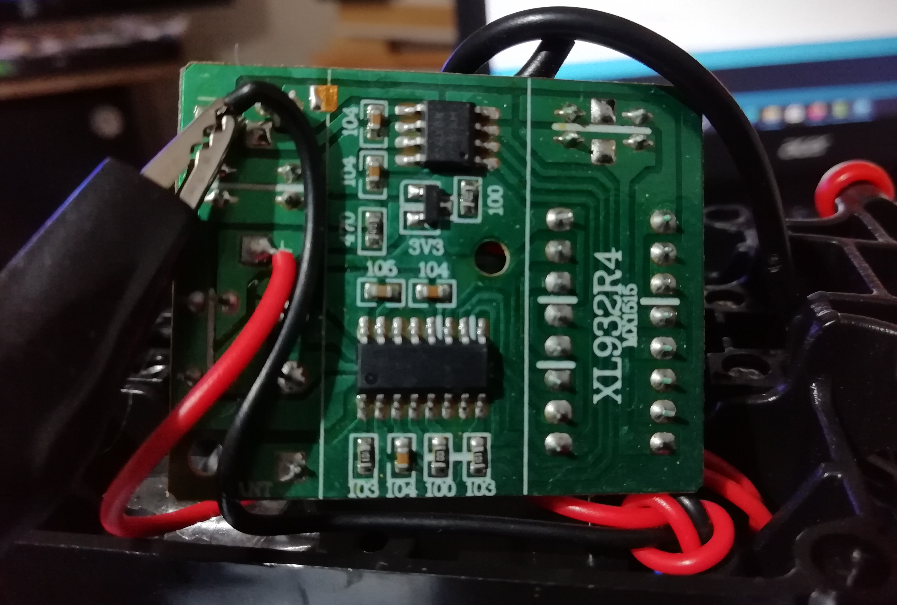
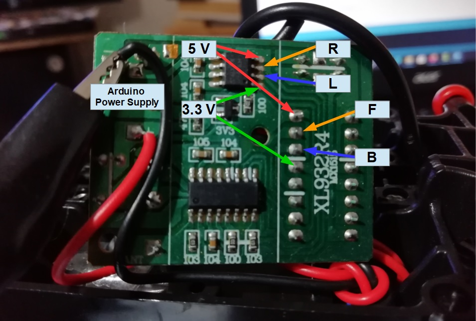

The car uses a XL932R4 Rf receiver, if the right, left, front and back output are easy to find on the pcd we cannot use them as it. These outputs drive power to the engine are not suitable with the arduino.

To detected the command pin that we can derive to use the arduino, put a crocodile plug on the mass and test the voltage on Pins while you set a command.
 Here the map for hacking the receiver.